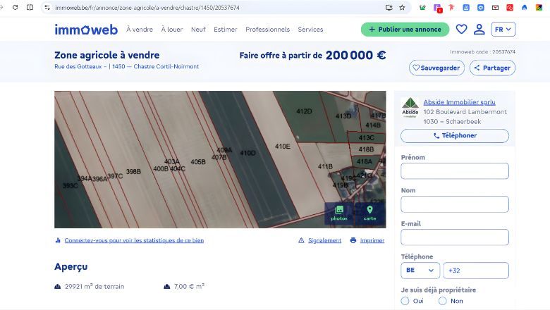
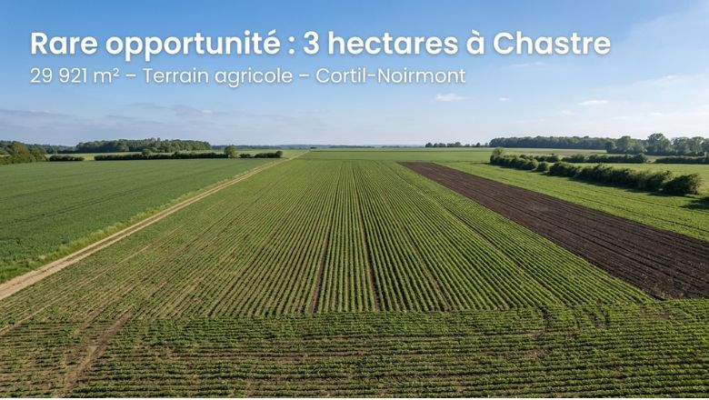

Voici ce que votre terrain à Cortil-Noirmont pourrait générer en leads — si nous le réécrivions aujourd'hui.

Aperçu: Annonce actuelle';">
Aperçu: Version optimisée';">Ne le prenez pas personnellement. Prenez-le comme une opportunité cachée. Chaque point ci-dessous représente un filtre qui élimine vos acheteurs avant même qu'ils ne vous appellent.
"Zone agricole à vendre" est une catégorie, pas une promesse. Le cerveau économise l'énergie : s'il ne voit pas de valeur immédiate, il scroll.
Un prix collé ("de200 000") évoque la précipitation. En immobilier, la confiance se joue aux détails. Ce manque de soin suggère un manque de rigueur dans la transaction.
Sur mobile (80% du trafic Immoweb), ce bloc indigeste demande un effort cognitif immédiat. Résultat : vos acheteurs ferment l'onglet en 3 secondes.
Vous mentionnez le bail, le préavis et les restrictions avant d'avoir créé le désir. Le lecteur se sent repoussé avant d'être attiré.
Le double accès (rue des Gotteaux ET chemin du Pré Mathy) est votre USP unique — une rareté foncière. Il est noyé au milieu du texte, invisible.
Ce paragraphe lourd ("L'agent immobilier n'a pas le pouvoir de vendre...") placé trop tôt crée de l'anxiété. Il élimine les acheteurs hésitants avant même qu'ils ne découvrent l'opportunité.
Copiez-collez. Testez 14 jours. Mesurez la différence.
Située dans l'entité recherchée de Cortil-Noirmont, cette parcelle de 29 921 m² (Section A, n°410 D) représente une opportunité d'investissement ou d'exploitation durable en plein cœur du Brabant Wallon.
Bénéficiant d'une excellente configuration, la terre profite d'un double accès via la rue des Gotteaux et le chemin du Pré Mathy, facilitant logistique et exploitation. Actuellement occupée par un bail à ferme (2ème période, débuté en 2009), la reprise du bien est envisageable pour une exploitation personnelle par un agriculteur, moyennant préavis légal.
Contactez-nous pour explorer le potentiel de cette terre et découvrir nos deux autres parcelles disponibles à proximité.
Vous recherchez une assise foncière de qualité dans l'une des communes les plus prisées du Brabant Wallon ? Abside Immobilier vous présente cette "bonne terre" agricole, idéalement située et parfaitement configurée.
D'une contenance cadastrale de 2 ha 99 a 21 ca, cette parcelle (Section A, n°410 D) se distingue par sa double accessibilité. Disposant d'un accès par la Rue des Gotteaux et d'un second par le Chemin du Pré Mathy, elle offre une fluidité de mouvement indispensable pour le charroi agricole moderne.
L'ensemble est actuellement valorisé via un bail à ferme entamé en 2009. Ce bien s'adresse particulièrement :
Note aux intéressés : Deux autres parcelles sont disponibles à la vente dans un périmètre proche, permettant d'envisager une extension de votre projet foncier.
Le propriétaire reste seul juge de l'acceptation des offres selon ses propres critères. Ne laissez pas passer cette opportunité foncière rare sur le secteur.
📍 Localisation : 1450 Chastre. 📞 Infos & contact : info@abside.be ou 0487/550 300.
"Rare opportunité" active le sentiment de peur de manquer (FOMO) avant même de mentionner les m². Le cerveau primitivement attiré par la rareté.
Les bénéfices (double accès, superficie) précèdent les contraintes juridiques. On crée le désir avant de présenter les modalités.
La mention des "deux autres parcelles disponibles" crée l'autorité et suggère une expertise du secteur, sans superlatifs vides.
Puces, espaces blancs et paragraphes courts respectent la charge cognitive mobile. 80% des acheteurs scrollent sur téléphone.
"Explorer le potentiel" invite à l'action sans pression commerciale agressive. Le vocabulaire valorisant ("potentiel") maintient l'état d'esprit positif.
Les chiffres ne mentent pas. Une annonce agricole de cette qualité à Chastre devrait générer un flux constant de prospects qualifiés.
Sur 6 mois de commercialisation :
Avec un taux de conversion moyen de 2% sur ce type de bien et une commission moyenne de €10.000 :
de chiffre d'affaires potentiel évaporé — sans compter les mandats futurs manqués.
Nous ne réécrivons pas pour "plaire". Nous structurons l'information selon la séquence décisionnelle du cerveau limbique : émotion → logique → action. Votre ancienne annonce faisait l'inverse.
Le marché brabançon est biculturel. Notre version néerlandaise n'est pas une traduction Google Translate, mais une restructuration culturelle pour l'acheteur flamand (plus direct, orienté ROI).
Sur Immoweb, 90% des annonces agricoles suivent le même template fade. Votre nouvelle annonce utilise le contrast pattern : elle arrête le scroll par différence visuelle et structurelle.
Copiez la version optimisée (FR et/ou NL) sur Immoweb et vos réseaux professionnels. Remplacez l'ancienne description sans changer vos photos.
Comparez le nombre de contacts reçus durant les 14 prochains jours avec les 14 jours précédents. La différence se voit généralement en 72 heures.
Si les chiffres parlent d'eux-mêmes (ils le feront), discutons de la systématisation de cette approche sur l'ensemble de votre portefeuille.
Voici ce qu'on peut construire ensemble.
Vous souhaitez appliquer ce niveau d'optimisation à toutes vos annonces et mettre en place un système de filtrage automatique des prospects — pour ne passer votre temps qu'avec des acheteurs sérieux, qualifiés et prêts à signer ?
Discuter de mes autres biens avec GradiChaque annonce non optimisée est un mandat donné à un concurrent.